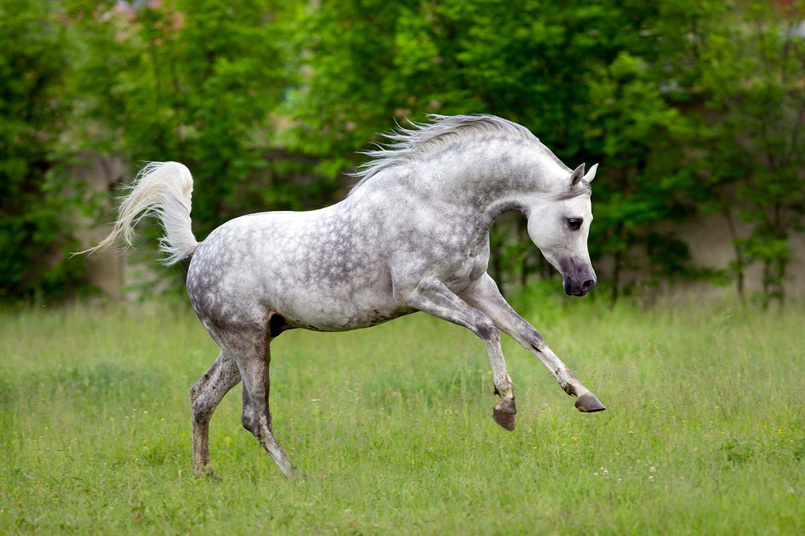
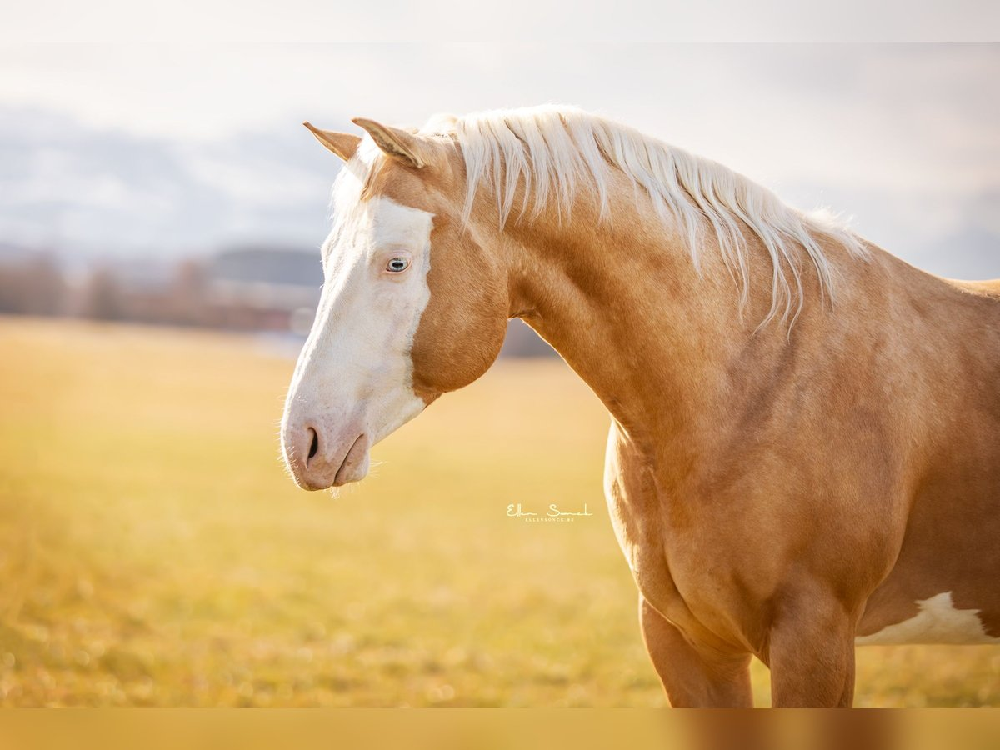
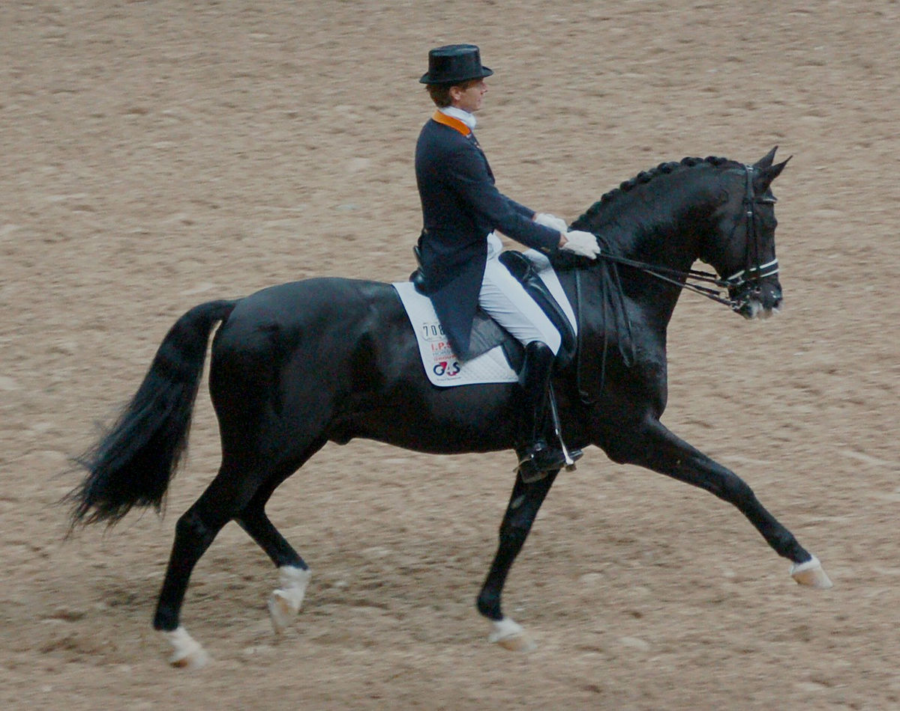
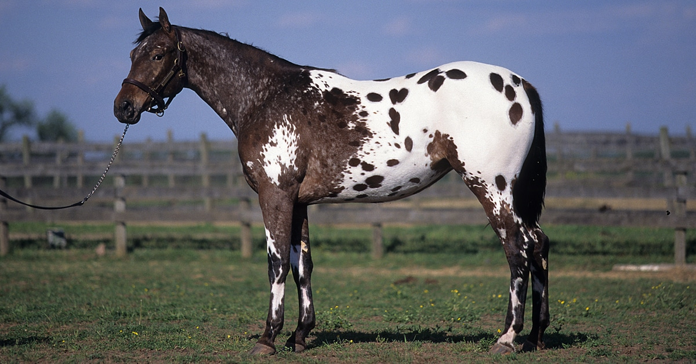

Type of hourses :
Thoroughbred
Known for their speed, agility, and endurance, Thoroughbreds are a popular choice for racing and jumping events. They are tall, slim, and athletic, often excelling in equestrian sports.
Arabian
Arabian horses are renowned for their endurance, elegance, and spirited nature. With distinctive features like a dished face and high tail carriage, they are often used in endurance riding and show events.

Quarter Horse
The American Quarter Horse is versatile and known for its quick acceleration and excellent performance in short-distance sprints. They are often used in rodeos, ranch work, and as all-around riding horses.

Warmblood
Warmbloods are commonly bred for dressage, show jumping, and other competitive equestrian sports. They are known for their balanced temperament, athleticism, and strong build.

Appaloosa
Recognizable by their unique spotted coat patterns, Appaloosas are known for their versatility and endurance. They are often used in Western riding disciplines, trail riding, and as all-around pleasure horses.

if you want to know more types Click here :
ALL ABOUT HOURSES
Overview page
Home page